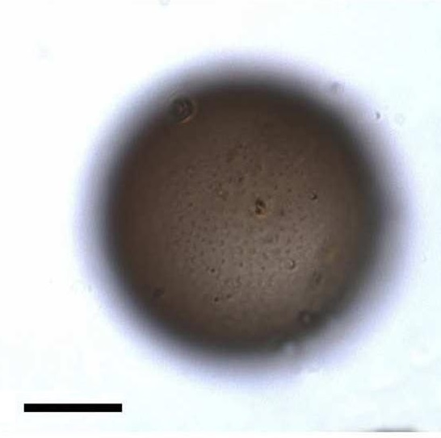
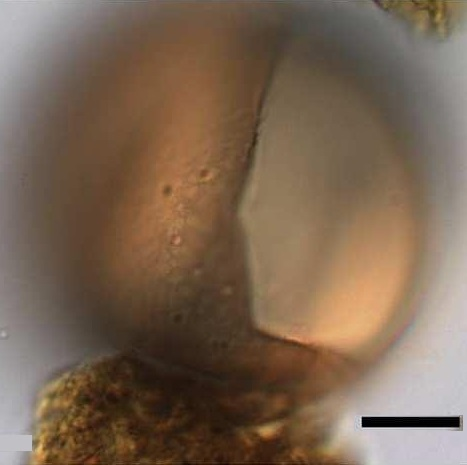
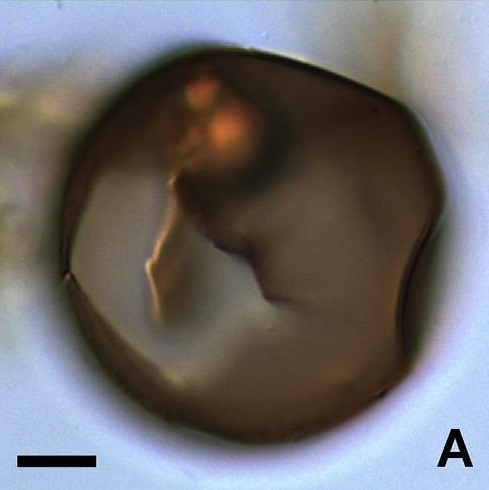
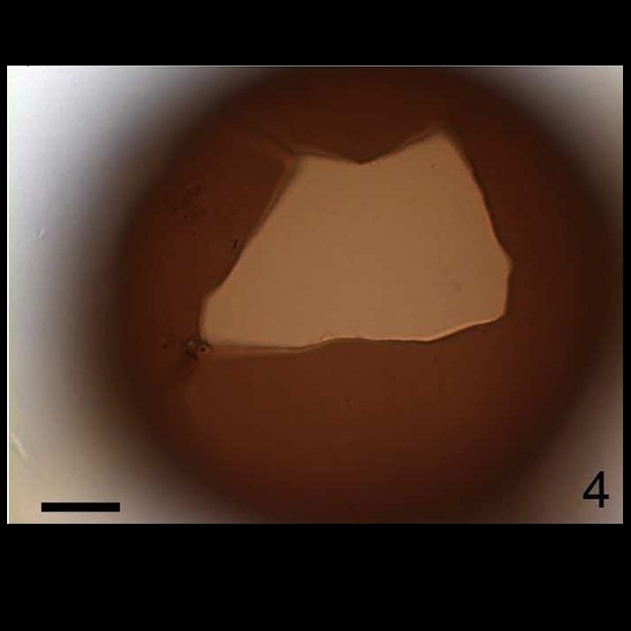
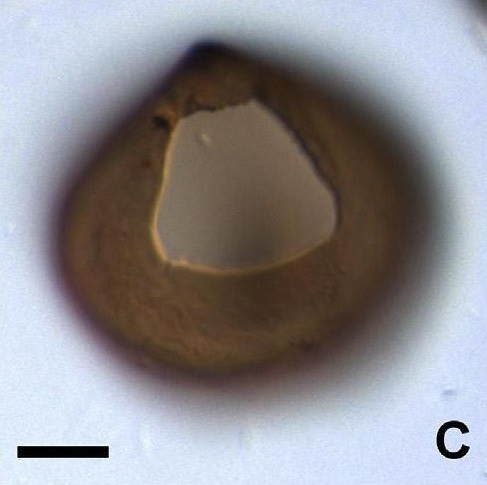

CYSTS LIST
BRIGANTEDINIUM
Surface |
Shape |
Archeopyle |
Species |
Central body (um.) |
Archeopyle (um.) |
Image |
MicrogranularNot smoothBrown |
Spherical |
IntercalarySaphopylicComprising one long, two intermediate, two short and one convex side |
Brigantedinium assymetricum | 30 to 32.8 (D) |
- |
 |
SmoothThick wallBrown |
Spherical |
SubhexagonalSaphopylicLongest axis up to 3/5(cyst diameter) |
Brigantedinium aureantum | 42 to 58 (L)40 to 63 (W) |
26 to 30 (L)26 to 30 (W) |
 |
SmoothBrown |
Spherical |
IntercalarySaphopylicOne long straight, four short and one curve principal |
Brigantedinium cariacoense | - |
35.8 to 48.5 (D) |
 |
SmoothThick wallBrown |
Spherical |
IntercalarySaphopylicIts anterior suture sub-parallel to its posterior suture which is the longest |
Brigantedinium majusculum | 73 to 92 (D) |
39 (L)23 to 32 (W) |
 |
Brown |
Spherical |
Nearly trapezoidalFour long and two very short archeopyle sutures |
Brigantedinium simplex | 33.5 to 43.5 (D) |
- |
 |